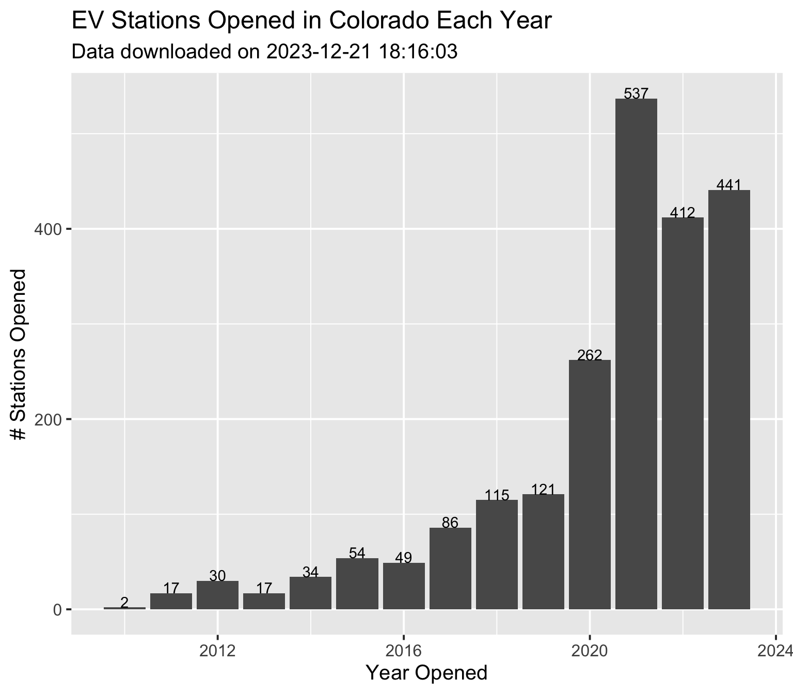
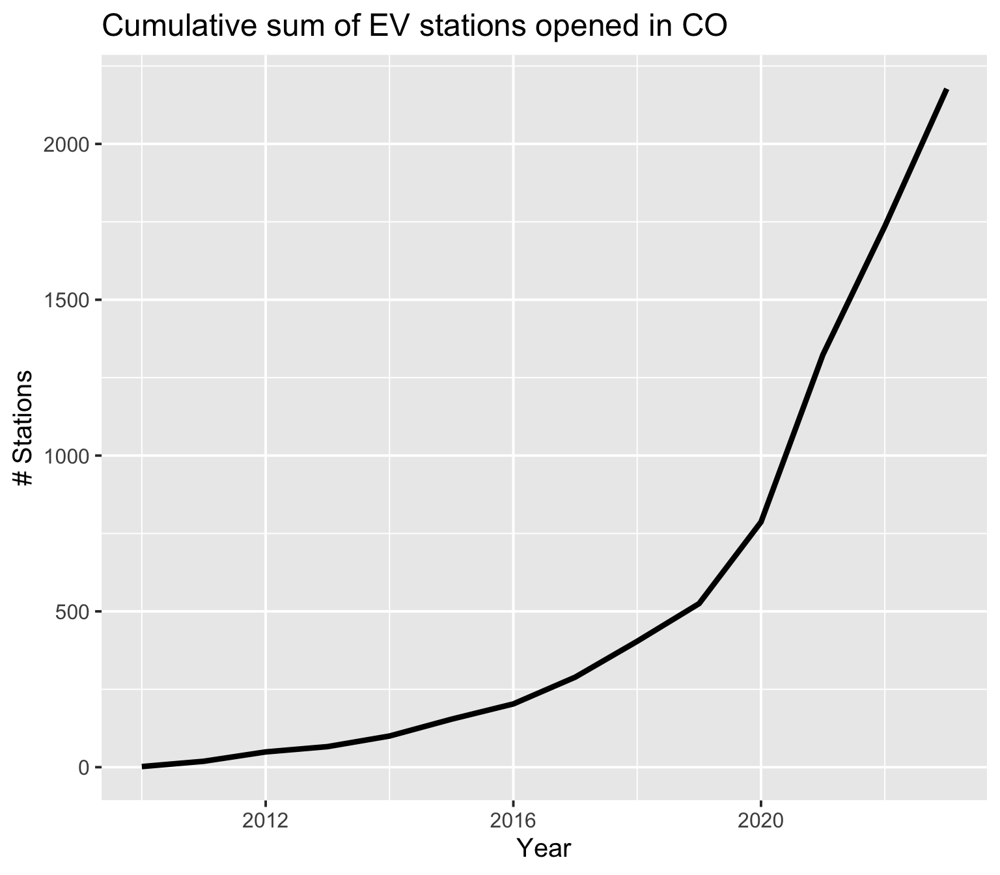

Recently I’ve been interested in analyzing trends in electric vehicle (EV) charging stations, using data from the Alternative Fuels Data Center’s Alternative Fuel Stations database. In this first post I’ll go over retrieving the data via an API, getting it into a tidy format, and some initial analysis and visualization.
You can obtain a free API key at: [https://developer.nrel.gov/signup/]. I’ve saved my API key in my local .Renviron file so I can load it without exposing the key in my code.
Tip
I find the easiest way to store an API key in your .Renviron file is with the usethis(Wickham, Bryan, et al. 2023) package. Simply call the usethis::edit_r_environ() function to open the .Renviron file, add your key in the form API_KEY=“xxxxx”, and save. After you restart R, you will be able to load the key in your code using Sys.getenv("API_KEY").
I will request data for all EV stations in Colorado.
I’ll retrieve the data from the API using the httr(Wickham 2023) package.
Code
# API key is stored in my .Renviron fileapi_key<-Sys.getenv("AFDC_KEY")# base url for AFDC alternative fuel stations APItarget<-"https://developer.nrel.gov/api/alt-fuel-stations/v1"# Return data for all electric stations in Coloradoapi_path<-".json?&fuel_type=ELEC&state=CO&limit=all"complete_api_path<-paste0(target,api_path,'&api_key=',api_key)response<-httr::GET(url =complete_api_path)if(response$status_code!=200){print(paste('Warning, API call returned error code',response$status_code))}print(paste("Data last downloaded on", response$date, "with response code of",response$status_code))
[1] "Data last downloaded on 2023-12-21 18:16:03 with response code of 200"
The result returned from the API is a response object, and the data is in JSON format. The response (which I’m not printing here because would show my API key) contains a status code; a code of 200 means the API request was successful. Some of the general error codes the API might return are described here.
I’ll use the jsonlite(Ooms 2014) package to convert the JSON to R.
Finally, the data we want to analyze is in the fuel_stations data frame.
Code
ev<-ev_dat$fuel_stations
Filter out non-EV data columns
The returned data contains many non-electric fields that we don’t need (they will all be NA since we requested electric fuel type only), so I’ll remove the non-relevant fields from the data frame to clean things up a bit, using the starts_with function from the dplyr(Wickham, François, et al. 2023) package.
I’ll also change the date column type and add a variable for year opened, since I want to look at how many stations were opened over time.
Code
# filter out non-EV related fieldsev<-ev%>%select(-dplyr::starts_with("lng"))%>%select(-starts_with("cng"))%>%select(-starts_with("lpg"))%>%select(-starts_with("hy"))%>%select(-starts_with("ng"))%>%select(-starts_with("e85"))%>%select(-starts_with("bd"))%>%select(-starts_with("rd"))%>%filter(status_code=='E')|>select(-ends_with("_fr"))# drop french language columns# change date field to date type and add a year opened variableev$open_date<-lubridate::ymd(ev$open_date)ev$open_year<-lubridate::year(ev$open_date)
Analysis
Station Openings Over Time
How many stations opened each year?
First I’d like to look at how many EV stations opened over time, so I’ll make a new data frame summarizing the number of stations opened by year.
Table 1: Number of charging stations opened per year.
Code
ev_opened%>%ggplot(aes(open_year, nopened))+geom_col()+xlab("Year Opened")+ylab("# Stations Opened")+ggtitle('EV Stations Opened in Colorado Each Year',subtitle =paste("Data downloaded on", response$date))+theme_grey(base_size =15)+geom_text(aes(label =nopened), vjust =0)

Figure 1: Number of EV Charging Stations Opened In Colorado each year
Cumulative sum of stations opened over time
We can also look at the cumulative sum of stations opened over time
Code
ev_opened%>%ggplot(aes(open_year,cumsum(nopened)))+geom_line(linewidth =1.5)+xlab("Year")+ylab("# Stations")+ggtitle("Cumulative sum of EV stations opened in CO")+theme_grey(base_size =15)

Figure 2: Cumulative sum of EV stations opened in CO
Station openings by level/charger type
Next I want to dig a little deeper and break down the station openings by charger type and/or level. I’d expect to see more Level 2 chargers in earlier years, and an increase in DC fast charging stations in more recent years. I’ll make a new data frame with the number of chargers opened by year, grouped by charging level (Level 1, Level 2, or DC fast).
Note here I’m working with the number of chargers of each level, not the number of stations.
Table 3: Number of EV chargers opened per year by charging level, in long format for plotting.
Now I can go ahead and plot the number of chargers opened over time, by level.
Code
g<-ev_opened_level_long%>%ggplot(aes(open_year, n_opened, group =Level))+geom_line(aes(col =Level), linewidth =1.5)+geom_point(aes(col =Level), size =4)+xlab("Year Opened")+ylab("# Charges Opened")+ggtitle("Number of Chargers Opened Per Year By Level")plotly::ggplotly(g)
Figure 3: Number of Chargers Opened Per Year By Level
Wickham, Hadley, Jennifer Bryan, Malcolm Barrett, and Andy Teucher. 2023. “Usethis: Automate Package and Project Setup.”
Wickham, Hadley, Romain François, Lionel Henry, Kirill Müller, and Davis Vaughan. 2023. “Dplyr: A Grammar of Data Manipulation.”https://CRAN.R-project.org/package=dplyr.
Source Code
---title: "EV Charging Stations Analysis"bibliography: references.bibimage: image.jpgdate: "2023-06-20"date-modified: todaycategories: [energy, EV, R, visualization, API]format: html: code-link: true code-fold: show fig-width: 10 fig-height: 7 tbl-cap-location: bottom toc: truefreeze: auto---# IntroductionRecently I've been interested in analyzing trends in electric vehicle (EV) charging stations, using data from the [Alternative Fuels Data Center](https://afdc.energy.gov/)'s Alternative Fuel Stations [database](https://developer.nrel.gov/docs/transportation/alt-fuel-stations-v1/). In this first post I'll go over retrieving the data via an API, getting it into a tidy format, and some initial analysis and visualization.```{r setup, include=FALSE}knitr::opts_chunk$set(echo = TRUE)``````{r Load Libraries, echo=FALSE, message=FALSE}library(httr)library(jsonlite)library(ggplot2)theme_set(theme_grey(base_size = 15))library(dplyr)```## DataI'll retrieve the EV station data using the AFDC API. The documentation for the AFDC fuel-stations API can be found at: <https://developer.nrel.gov/docs/transportation/alt-fuel-stations-v1/all/#station-count-record-fields>- You can obtain a free API key at: \[<https://developer.nrel.gov/signup/>\]. I've saved my API key in my local .Renviron file so I can load it without exposing the key in my code. ::: callout-tip I find the easiest way to store an API key in your .Renviron file is with the *usethis* [@usethis] package. Simply call the `usethis::edit_r_environ()` function to open the .Renviron file, add your key in the form *API_KEY="xxxxx"*, and save. After you restart R, you will be able to load the key in your code using `Sys.getenv("API_KEY")`. :::- I will request data for all EV stations in **Colorado**.- I'll retrieve the data from the API using the *httr* [@httr] package.```{r Load Data from API}# API key is stored in my .Renviron fileapi_key <- Sys.getenv("AFDC_KEY")# base url for AFDC alternative fuel stations APItarget <- "https://developer.nrel.gov/api/alt-fuel-stations/v1"# Return data for all electric stations in Coloradoapi_path <- ".json?&fuel_type=ELEC&state=CO&limit=all"complete_api_path <- paste0(target,api_path,'&api_key=',api_key)response <- httr::GET(url = complete_api_path)if (response$status_code != 200) { print(paste('Warning, API call returned error code',response$status_code))}print(paste("Data last downloaded on", response$date, "with response code of",response$status_code))```- The result returned from the API is a *response* object, and the data is in JSON format. The response (which I'm not printing here because would show my API key) contains a [status code](https://restfulapi.net/http-status-codes/); a code of 200 means the API request was successful. Some of the general error codes the API might return are described [here](https://developer.nrel.gov/docs/errors/).- I'll use the *jsonlite* [@jsonlite] package to convert the JSON to R.```{r}ev_dat <- jsonlite::fromJSON(httr::content(response,"text"))class(ev_dat)names(ev_dat)```- The converted response is actually a list containing the data as well as some metadata about the request.- The *total_results* field gives the total number of fuel station records that match your requested query (regardless of any limit applied).```{r}ev_dat$total_results```- The \*[station_counts](https://developer.nrel.gov/docs/transportation/alt-fuel-stations-v1/all/#station-count-record-fields)\* field gives a breakdown by fuel type (here I requested only electric so the counts for all other fuel types are zero). - *total* includes the number of individual chargers/plugs, which is why it is greater than the station count. - In this case, there are `r ev_dat$station_counts$fuels$ELEC$stations$total` stations, and a total of `r ev_dat$station_counts$fuels$ELEC$total` chargers/plugs.```{r}ev_dat$station_counts$fuels$ELEC```Finally, the data we want to analyze is in the *fuel_stations* data frame.```{r}ev <- ev_dat$fuel_stations```### Filter out non-EV data columnsThe returned data contains many non-electric fields that we don't need (they will all be NA since we requested electric fuel type only), so I'll remove the non-relevant fields from the data frame to clean things up a bit, using the *starts_with* function from the *dplyr* [@dplyr] package.I'll also change the date column type and add a variable for year opened, since I want to look at how many stations were opened over time.```{r remove fields}# filter out non-EV related fieldsev <- ev %>% select(-dplyr::starts_with("lng")) %>% select(-starts_with("cng")) %>% select(-starts_with("lpg")) %>% select(-starts_with("hy")) %>% select(-starts_with("ng")) %>% select(-starts_with("e85")) %>% select(-starts_with("bd")) %>% select(-starts_with("rd")) %>% filter(status_code == 'E') |> select(-ends_with("_fr")) # drop french language columns# change date field to date type and add a year opened variableev$open_date <- lubridate::ymd(ev$open_date)ev$open_year <- lubridate::year(ev$open_date)```## Analysis### Station Openings Over Time#### How many stations opened each year?First I'd like to look at how many EV stations opened over time, so I'll make a new data frame summarizing the number of stations opened by year.```{r }#| label: tbl-nopened-per-year#| tbl-cap: "Number of charging stations opened per year."ev_opened <- ev %>% count(open_year,name = "nopened") %>% filter(!is.na(open_year)) ev_opened |> DT::datatable(rownames = FALSE, options = list(pageLength = 5))``````{r }#| label: fig-nopened-bar#| fig-width: 8#| fig-cap: Number of EV Charging Stations Opened In Colorado each year#| ev_opened %>% ggplot(aes(open_year, nopened)) + geom_col() + xlab("Year Opened") + ylab("# Stations Opened") + ggtitle('EV Stations Opened in Colorado Each Year',subtitle = paste("Data downloaded on", response$date)) + theme_grey(base_size = 15) + geom_text(aes(label = nopened), vjust = 0)```#### Cumulative sum of stations opened over timeWe can also look at the cumulative sum of stations opened over time```{r}#| label: fig-nopen-cumsum#| fig-cap: "Cumulative sum of EV stations opened in CO"#| fig-width: 8ev_opened %>%ggplot(aes(open_year,cumsum(nopened))) +geom_line(linewidth =1.5) +xlab("Year") +ylab("# Stations") +ggtitle("Cumulative sum of EV stations opened in CO") +theme_grey(base_size =15)```### Station openings by level/charger typeNext I want to dig a little deeper and break down the station openings by charger type and/or level. I'd expect to see more Level 2 chargers in earlier years, and an increase in DC fast charging stations in more recent years. I'll make a new data frame with the number of chargers opened by year, grouped by charging level (Level 1, Level 2, or DC fast).- *Note* here I'm working with the number of *chargers* of each level, not the number of *stations*.```{r}#| label: tbl-ev-opened-by-level#| tbl-cap: "Number of EV chargers opened per year, by charging level"ev_opened_level <- ev %>%select(id,open_date, open_year, ev_dc_fast_num, ev_level2_evse_num,ev_level1_evse_num) %>%group_by(open_year) %>%summarize(n_DC =sum(ev_dc_fast_num,na.rm =TRUE), n_L2 =sum(ev_level2_evse_num,na.rm =TRUE),n_L1 =sum(ev_level1_evse_num,na.rm =TRUE) ) %>%filter(!is.na(open_year))ev_opened_level |> DT::datatable(rownames =FALSE, options =list(pageLength =5))```To make plotting easier, I'll pivot the dataframe from wide to long format so I can group by charging level:```{r}#| label: tbl-ev-opened-by-level-long#| tbl-cap: "Number of EV chargers opened per year by charging level, in long format for plotting."ev_opened_level_long <- ev_opened_level %>% tidyr::pivot_longer(cols =c('n_DC','n_L2','n_L1'),names_to ="Level",names_prefix ="n_",values_to ="n_opened")ev_opened_level_long |> DT::datatable(rownames =FALSE, options =list(pageLength =5))```Now I can go ahead and plot the number of chargers opened over time, by level.```{r }#| label: fig-nopened-level#| fig-cap: "Number of Chargers Opened Per Year By Level"g <- ev_opened_level_long %>% ggplot(aes(open_year, n_opened, group = Level)) + geom_line(aes(col = Level), linewidth = 1.5) + geom_point(aes(col = Level), size = 4) + xlab("Year Opened") + ylab("# Charges Opened") + ggtitle("Number of Chargers Opened Per Year By Level")plotly::ggplotly(g)```## Session Info```{r}sessionInfo()```## References